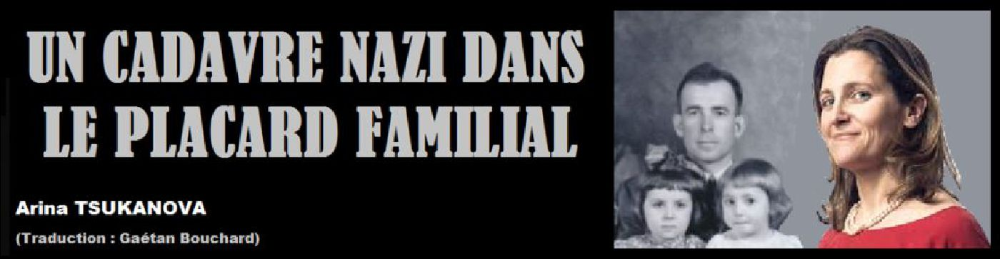
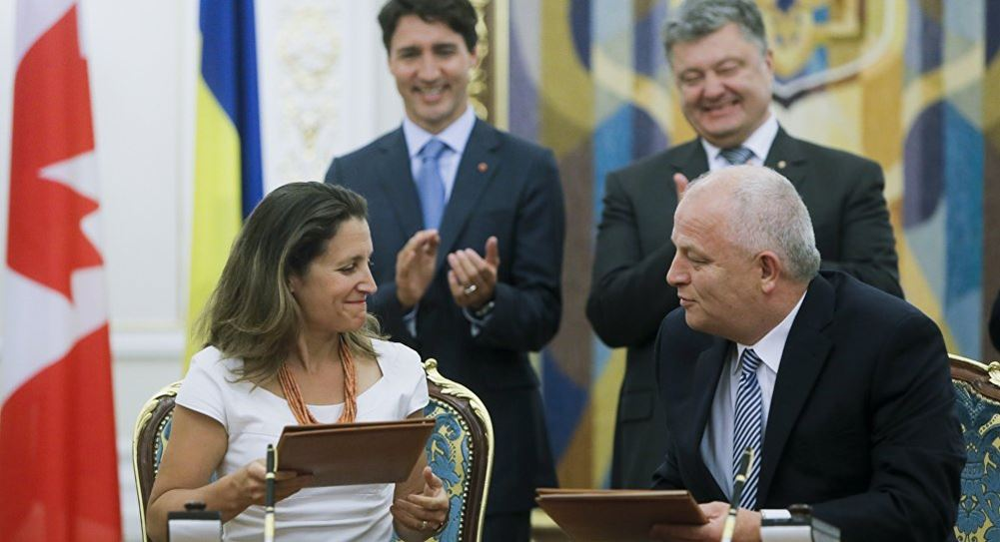
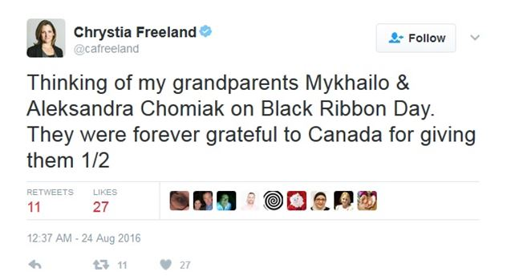
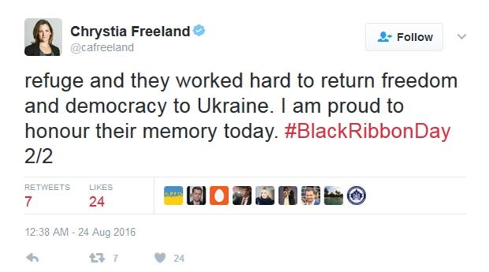
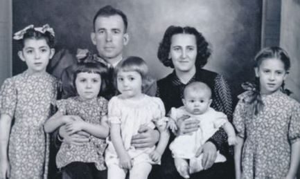
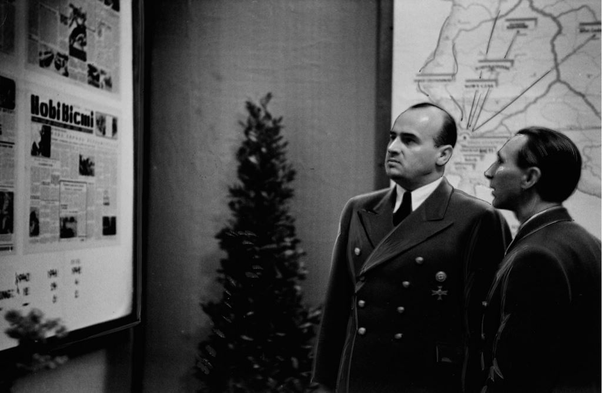
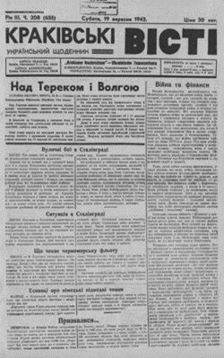
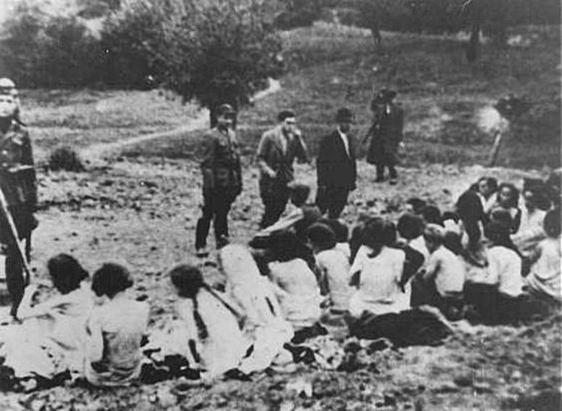

par Arina TSUKANOVA (traduction : Gaétan Bouchard)

Le 10 janvier, le Premier ministre canadien Justin Trudeau a remplacé le ministre des Affaires étrangères Stéphane Dion par Chrystia Freeland, une ancienne journaliste fière de ses racines ukrainiennes et bien connue pour son hostilité envers la Russie. Certains analystes croyaient que la décision de Trudeau pouvait avoir commencé quand il semblait encore probable que Hillary Clinton deviendrait la nouvelle présidente des États-Unis et une ligne dure contre Moscou était attendue à Washington.
Cependant, au moment où le changement a été fait, Donald Trump était en route vers la Maison Blanche et le choix de Trudeau signifiait que le Canada s'alliait plus avec l'hostilité croissante envers la Russie dans l'Union européenne qu'avec les espoirs du président Trump d'établir une relation plus coopérative avec le Kremlin. Avec Freeland à la tête du ministère des Affaires étrangères du Canada, la chance d'avoir une position commune entre Ottawa et Washington semblait soudainement éloignée.
Les gens qui ont suivi la carrière de Freeland étaient conscients que son obsession depuis des décennies a été que l'Ukraine devait être arrachée de la sphère d'influence russe. Ses opinions s'accordent avec l'ultra-nationalisme ukrainien de ses grands-parents maternels qui ont immigrés au Canada après la Seconde Guerre Mondiale et qu'elle a dépeint comme des victimes de Joseph Staline et de l'Armée Rouge.
Ainsi, Freeland a célébré l'effondrement de l'Union Soviétique en 1991, qui a permis à l'Ukraine d'obtenir son indépendance. Freeland, alors âgée de 20 ans, travaillait à Kiev en tant que pigiste pour le Financial Times et le Washington Post, éclatante de joie avec l'émergence d'une « Nouvelle Ukraine ».
Au cours de la décennie suivante, en tant que rédactrice en chef des États-Unis du Financial Times, elle a fièrement interviewé le président ukrainien Viktor Iouchtchenko, qui avait pris le pouvoir à la suite de la «Révolution orange» de 2004. Dans son approche du journalisme, Freeland a illustré clairement son engagement à fomenter des tensions ukraino-russes de toutes les façons possibles. En effet, au cours de sa carrière journalistique, qui a pris fin en 2013 quand elle a été élue au Parlement canadien, Freeland est restée farouchement anti-russe.
En 2014, le rival de Iouchtchenko, Viktor Ianoukovitch, a été élu président de l'Ukraine, tandis que la députée canadienne Freeland encourageait les protestations « Euro-Maidan » contre Ianoukovitch et son désir de maintenir des relations amicales avec Moscou. Le 27 janvier 2014, alors que les manifestations se faisaient de plus en plus violentes avec les combattants de rue ultra-nationalistes qui prenaient la tête et avec leurs bombes incendiaires lancées sur la police. Freeland a visité Kiev et a publié un article dans le Globe and Mail blâmant Ianoukovitch pour la violence.
« Les valeurs démocratiques sont rarement contestées aussi directement qu'elles le sont aujourd'hui en Ukraine », a déclaré Freeland, affirmant que les manifestants, et non le président élu, représentaient la démocratie et la primauté du droit. « Leur victoire sera une victoire pour nous tous; Leur défaite affaiblira la démocratie loin de l'Euromaidan. Nous sommes tous Ukrainiens maintenant. Faisons ce que nous pouvons - ce qui est beaucoup - pour les soutenir. »

CHANGEMENT DE RÉGIME EN UKRAINE
L'éditorial de Freeland est apparu à peu près au même moment que son alliée idéologique, la secrétaire d'État adjointe des États-Unis, Victoria Nuland, a été prise sur une ligne téléphonique non sécurisée discutant avec l'ambassadeur des Etats-Unis en Géorgie, Geoffrey Pyatt, que les nouveaux dirigeants de l'Ukraine devraient être1. « Yats est le gars », a déclaré Nuland au sujet d'Arseniy Yatsenyuk tout en rejetant l'approche moins agressive de l'UE à la crise avec la remarque pitoyable, «Au diable l'UE » Nuland et Pyatt ont ensuite réfléchi sur la façon de «coller cette chose» et « la faire croître ».
Quelques semaines plus tard, le 20 février, un mystérieux tireur d'élite a tiré sur la police et les manifestants, déclenchant une journée sanglante de chaos. Le 22 février, des émeutiers armés ont saisi les bâtiments du gouvernement et forcé Yanoukovitch à fuir pour sa vie. Il fut alors destitué sans que les règles constitutionnelles soient suivies. Yatsenyuk est devenu Premier ministre, et les gouvernements occidentaux ont rapidement déclaré le nouveau régime « légitime ».
Le nouveau régime xénophobe à Kiev - hérissé d'hostilité envers les Ukrainiens de souche russe - n'a pas embarrassé Freeland. En tant que nouveau ministre du commerce international du Canada, Freeland a rencontré fréquemment des représentants ukrainiens, plus souvent qu'avec plusieurs des principaux partenaires commerciaux du Canada.
Mais la question la plus troublante est de savoir si le dévouement de Freeland envers le nationalisme ukrainien est enraciné non pas dans son engagement envers la «règle de droit» ou les «valeurs démocratiques» ou même le bien-être du peuple ukrainien dont le niveau de vie a fortement diminué depuis le putsch du 22 février 2014 (au milieu de la corruption continue du gouvernement), mais dans son dévouement envers ses grands-parents ukrainiens qu'elle considère encore comme des victimes de Staline et de l'Armée Rouge.
Le 24 août dernier, en réfléchissant à ce que l'on appelle la Journée du Ruban Noir, qui regroupe les crimes de Joseph Staline et d'Adolf Hitler (Staline avec la note la plus salée), elle écrit sur Twitter, « Pensant à mes grands-parents Michael et Alexandra Chomiak, la Journée du Ruban Noir. Ils ont été pour toujours reconnaissants envers le Canada de leur avoir donné refuge et ils ont travaillé fort pour rendre la liberté et la démocratie à l'Ukraine. Je suis fier d'honorer leur mémoire aujourd'hui. »
Dans son autobiographie, Freeland présente ses grands-parents de la manière suivante: «Mes grands-parents maternels ont fui l'Ukraine occidentale après que Hitler et Staline aient signé leur pacte de non-agression en 1939. Ils n'ont jamais osé revenir, mais ils sont restés en contact étroit avec leurs frères et sœurs et leurs familles, qui sont restés derrière.
Selon Freeland, son grand-père Michael Chomiak était «un avocat et un journaliste avant la Seconde Guerre mondiale, mais ses grands-parents savaient que les Soviétiques allaient envahir l'Ukraine occidentale et ils se sont enfuis.» Après la guerre, sa mère est née dans un camp de réfugiés en Allemagne avant que la famille immigre dans l'ouest du Canada, a-t-elle écrit.
 Michael Chomiak et sa femme Alexandra, avec leurs enfants au Canada en 1952. La mère de Freeland, Halyna, est la deuxième à partir de la gaucheLe grand-père de Freeland n'aurait prétendument pu obtenir un visa que seulement grâce à sa sœur qui avait traversé l'océan avant la guerre. L'histoire familiale racontée par Freeland décrit ses grands-parents comme des victimes de la Seconde Guerre mondiale, mais ce n'est pas l'histoire vraie ou complète. Le mystérieux secret familial de Chrystia Freeland est que son grand-père, Michael Chomiak, a fidèlement servi l'Allemagne nazie jusqu'à sa reddition, et la famille de Chomiak ne s'est déplacée au Canada qu'après la défaite du Troisième Reich par l'Armée Rouge de l'Union soviétique et ses alliés, les États-Unis et la Grande-Bretagne.
Michael Chomiak n'a pas été une victime de la guerre - il était du côté des agresseurs allemands qui ont collaboré avec les nationalistes ukrainiens à tuer des Russes, des Juifs, des Polonais et d'autres minorités. L'ancienne journaliste Freeland a choisi de blanchir son histoire familiale pour laisser de côté le service de son grand-père à Adolf Hitler. Bien sûr, si elle avait dit la vérité, elle n'aurait peut-être jamais réussi une carrière politique au Canada. Sa féroce hostilité à l'égard de la Russie pourrait aussi être envisagée sous un jour différent.
LE GRAND-PÈRE DE FREELAND
Selon des sources canadiennes, Chomiak est diplômé de l'Université de Lviv en Ukraine occidentale avec une maîtrise en droit et en sciences politiques. Il a commencé une carrière avec le journal galicien Dilo (Action), publié à Lviv. Après le début de la Seconde Guerre mondiale, l'administration nazie a nommé Chomiak à la rédaction du journal Krakivski Visti (Nouvelles de Cracovie).
 Le gouverneur Hans Frank (à gauche) et Emil Gassner ouvrent la Maison de la presse allemande à Cracovie en mars 1942La vérité semble donc être que Chomiak est passé de l'Ukraine à la Pologne occupée par les nazis afin de travailler pour le Troisième Reich sous le commandement du gouverneur général Hans Frank, l'homme qui a organisé l'Holocauste en Pologne. Le travail de Chomiak était directement supervisé par Emil Gassner, le chef du service de presse dans le gouvernement général polonais.
Le gouverneur Hans Frank (à gauche) et Emil Gassner ouvrent la Maison de la presse allemande à Cracovie en mars 1942.
Michael Chomiak installa confortablement sa famille dans un ancien appartement juif (ou aryanisé) à Cracovie. Les bureaux de rédaction de Krakivski Visti ont également été prises à un propriétaire juif, le quotidien juif polonais Nowy Dziennik de Cracovie. Son rédacteur en chef à l'époque a été forcé de fuir Cracovie pour Lviv, où il a été capturé après l'occupation de la Galice et envoyé au camp d'extermination de Belzec, où il a été assassiné avec 600 000 autres Juifs.
Ainsi, il semble que le grand-père de Freeland - plutôt que d'être une victime impuissante - a obtenu un travail prestigieux pour répandre la propagande nazie, louant Hitler d'une maison d'édition volée aux Juifs et donné aux Ukrainiens qui partagent les valeurs du nazisme.
Le 24 avril 1940, Krakivski Visti publia un panégyrique d'une pleine page à Adolf Hitler consacré à son 51e anniversaire (quatre jours plus tôt). Chomiak a également salué le gouverneur général Hans Frank : « La population ukrainienne a été enchantée de voir l'établissement d'une autorité allemande juste, dont vous êtes le porteur, Monsieur le Gouverneur général. Le peuple ukrainien a exprimé cette joie non seulement à travers les fleurs qu'ils ont jetées aux troupes allemandes qui ont pénétré dans la région, mais aussi par les sacrifices de sang nécessaires pour combattre les usurpateurs polonais. » (À cause du rôle de Frank dans l'Holocauste, le Tribunal de Nuremberg l'a reconnu coupable de crimes contre l'humanité, et l'a fait exécuté).
Au-delà d'exalter Hitler et ses sbires, Chomiak se réjouissait des victoires militaires nazies, y compris des bombardements intensifs contre la Grande-Bretagne. Tout en louant le Troisième Reich, Krakivski Visti était également sous les ordres des autorités allemandes pour susciter la haine contre la population juive. Des sélections éditoriales du journal de Chomiak peuvent être trouvées dans les musées de l'Holocauste du monde entier, comme celui de Los Angeles, en Californie.
Le numéro du 6 novembre 1941 de Krakivski Visti décrit extatiquement comment mieux Kiev est sans Juifs. « Il n'y en a pas un seul à Kiev aujourd'hui, alors qu'il y en avait 350.000 sous les bolchéviks », écrit le journal, se réjouissant que les Juifs « aient obtenu le sort qu'ils méritaient ».
 Femmes juives alignées en attendant d'être fusillées à Babi Yar, septembre 1941Ce « sort mérité » se réfère à la fusillade de masse de la population juive de Kiev à Babi Yar. En seulement deux jours, du 29 au 30 septembre 1941, un total de 33 771 personnes ont été assassinées, un chiffre qui n'inclut pas les enfants de moins de trois ans. Krakivski Visti était enthousiaste pour une ville où la population juive avait «disparu» rendant Kiev «belle, glorieuse». Les éditoriaux de Chomiak ont également décrit une Pologne « infectée par des Juifs ».
Selon John-Paul Himka, un historien canadien d'origine ukrainienne, Krakivski Visti a incité à la haine contre les juifs, créant une atmosphère propice au meurtre de masse. En 2008, l'Institut de recherche historique de l'Université Nationale de Lviv a publié un article co-écrit par Himka intitulé « Quelle était l'attitude de l'organisation des nationalistes ukrainiens envers les Juifs ? » Le document indique que, par ordre des autorités allemandes, Krakivski Visti a publié une série d'articles entre juin et septembre 1943 sous le titre « Yids2 en Ukraine » qui ont été écrits d'une manière extrêmement antisémite et pronazie. L'historien canadien écrit que les Juifs étaient dépeints comme des criminels, alors que les Ukrainiens étaient dépeints comme des victimes.
RÉFUGIÉS AU CANADA
Alors que le sort de la guerre s'est tourné contre les nazis et que l'Armée Rouge a avancé à travers l'Ukraine et la Pologne, le propagandiste nazi Emil Gassner a transféré Michael Chomiak en 1944 à Vienne où Krakivski Visti a continué de publier. Alors que le Troisième Reich s'effondrait, Chomiak partit avec l'armée allemande en retraite et se rendit aux Américains en Bavière, où il fut placé avec sa famille dans un centre spécialisé de renseignements militaires à Bad Wörishofen, à 78 kilomètres de Munich, au pied des Alpes.
La famille Chomiak a reçu un logement, des frais de subsistance et des soins de santé. Dans sa biographie, Freeland n'en parle que comme « un camp de réfugiés ». En septembre 1946, la fille de Michael Chomiak, Halina, est née dans cette ville thermale. En mai 1948, l'installation a été fermée et Chomiak, l'ancien rédacteur nazi, est parti pour le Canada.
S'il est vrai que les péchés d'un grand-père ne devraient pas être portés par ses descendants, Freeland n'aurait pas dû tromper le public sur l'histoire d'une telle importance, surtout quand ses tromperies cachaient aussi comment elle a partiellement développé sa vision du monde. La profonde hostilité de la famille envers la Russie semble avoir été transmise de la génération de Michael Chomiak à sa petite-fille Chrystia Freeland.
Comme beaucoup de nationalistes ukrainiens aujourd'hui, y compris des groupes d'immigrants post-Seconde Guerre mondiale au Canada et aux États-Unis, Freeland dissimule les abus violents du régime actuel à Kiev envers les Russes ethniques, y compris l'incendie de l'édifice de l'Union des Syndicats à Odessa et l'enrôlement de milices néo-nazies pour exécuter l'opération dite « antiterroriste » contre les rebelles ethniques russes dans la région de Donbass. Dans l'ensemble, le conflit a tué quelque 10 000 personnes, y compris de nombreux civils russes.
Mais Freeland ne voit que « l'agression russe » et jure de maintenir une ligne impitoyablement dure pour punir Moscou. Donc, la question pressante sur Freeland est de savoir si son histoire familiale la rend incapable d'une évaluation objective de cette nouvelle crise dangereuse de la guerre froide. Est-ce une personne qui décrit son grand-père collaborateur nazi comme quelqu'un qui a « travaillé fort pour rendre la liberté et la démocratie en Ukraine » apte à représenter le Canada dans le monde ?
Partager cette page